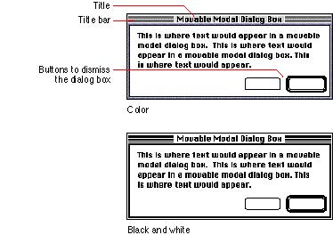
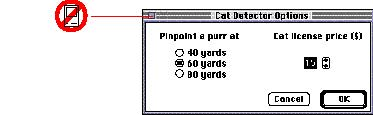

|
Movable Modal Dialog Box AppearanceThe design of the movable modal dialog box adds a title bar with racing stripes to the standard modal dialog box window. A movable modal dialog box does not have a close box or zoom box. This design gives the user visual feedback that the dialog box is modal, and must be responded to before completing any other action in the active application, but the user can move it. Figure 6-8 shows the appearance of a movable modal dialog box.Figure 6-8 The essential elements of a movable modal dialog box  Don't use a close box in a movable modal dialog box. As described in the next section, "Movable Modal Dialog Box Behaviors," the only way to close a movable modal dialog box is by clicking a button. If you add a close box, it confuses the appearance of the dialog box with the modeless dialog box. A close box could also create a situation for users where they wouldn't know what to expect. For example, would the close box mean "accept the changes I've made" or "close the dialog box without using the input"? Figure 6-9 shows a movable modal dialog box with a close box, which is incorrect. Figure 6-9 Close box used incorrectly in a movable modal dialog box  |